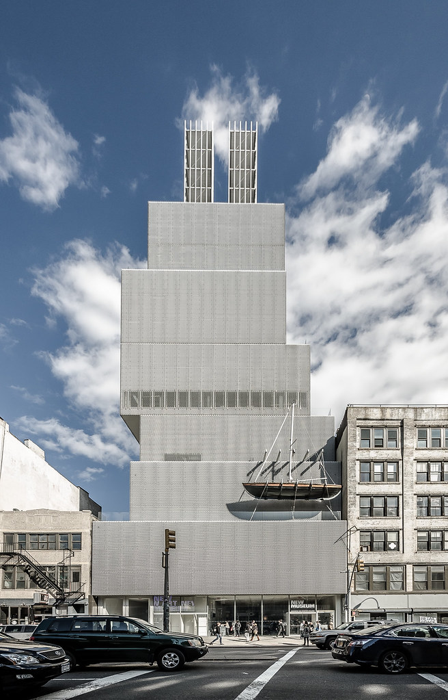
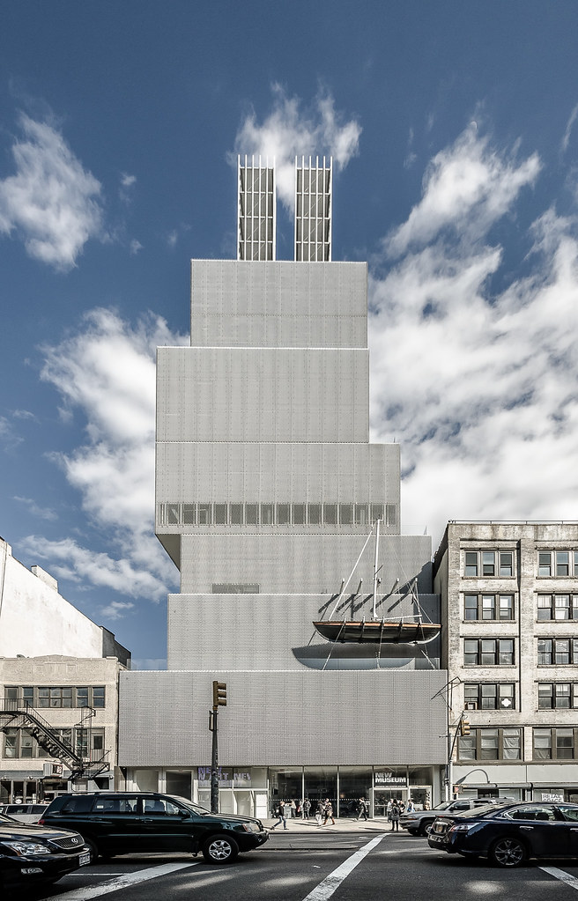

The Arts in New York
There are many museums to visit in New York, especially art musuems. New York City is known for these art museums as they include many different famous artists and designers through the different galleries available. They include many different artists, including Vincent Van Gogh and Claude Monet. Not only art museums, other museums also bring out the meaning of New York City and how visitors can visit based on interests and curiosity within what is available. Each museum have different aestetics and experience they bring, creating a new environment in every single museum. Museums are important to the brining of New York City while visitors are able to learn and enjoy.
Where to go?
Including the exciting experience they bring in the inside, they include different architecture and enable for a upbringing from the outside of the buildings, standing out from the different streets of the city. Within these different museums, you will be able to learn about New York and what there is within the development and sites of New York City. There are many museums out there which may be overwhelming to pick between but looking for what you are interested in can help you find what museums you may want to visit in New York City. If you go to New York City, make sure you hurry and make a plan!


 
